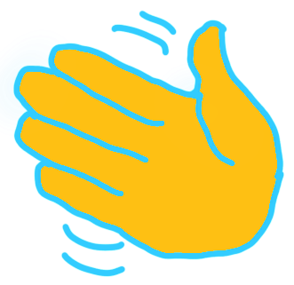
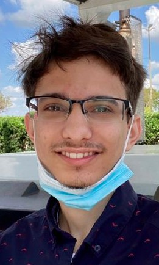

Hello!
I'm Amr Ojjeh. If you're reading this on September 8 between 11am and 1pm, then you can likely find me on the Cy-Fair campus. Say hi to me!

If not, then let me tell you what this club has to offer right now.
We're still transitioning to in-person, but you can always find us on the Discord!
Every week, we hold a meeting. On odd weeks, we live stream and talk about an interesting CS concept, while on even weeks, we hold game nights. Tomorrow's a game night, and I'll hopefully see you there!
Every two weeks, on odd weeks, I'll also be releasing a new article, covering either a fundamental or obsecure CS concept, and ending the article with a few challenges. So far, I've released an article on binary, and on the basics of Python. Upcoming is an article on the madelbrot set. Further down the line, I plan to cover the basics of raytracing and plants! I hope you enjoy!
Regards,
Amr Ojjeh, President of CS Club